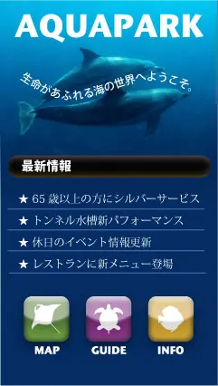

Illustrator 作品制作
アクアパーク水族館携帯サイトデザイン
- 
| 解説 |
本作品は、架空の水族館「アクアパーク水族館」の携帯端末向けWebサイトデザインとして制作したものです。トップ画面には、海の中を泳ぐイルカのビジュアルを背景に配置し、「生命があふれる海の世界へようこそ。」というキャッチコピーを添えることで、施設のテーマである「海の神秘と生き物との出会い」を強調しております。 また、画面下部には「MAP」「GUIDE」「INFO」といったアイコンを設置し、ユーザーが必要な情報へ直感的にアクセスできるようデザインされております。最新情報欄ではイベント・サービスの告知を簡潔に表示し、利用者が素早く施設情報を確認できる構成を意識しました。 |
|---|---|
| 目的 |
本サイトの目的は、アクアパーク水族館の魅力を効果的に発信し、来館を促進するとともに、ユーザーが必要とする情報をわかりやすく提供することです。 まず、イルカショーやトンネル水槽パフォーマンスといった目玉イベントや、最新の展示情報を簡潔に伝えることで、利用者に「行ってみたい」という動機を与えることを重視しております。また、シルバーサービスやレストランの新メニュー紹介といった多様な情報をまとめることで、幅広い年齢層の利用者に向けた利便性の高いサービスを提供しております。 さらに、携帯端末からのアクセスを想定したシンプルなUI構成により、来館前の情報収集を快適に行えるようにし、施設への興味喚起から来館への行動導線をスムーズに結びつけることを目的としております。 |
| ターゲット |
本サイトは、アクアパーク水族館への来館を検討している幅広い年齢層の利用者を想定しております。特に、休日のレジャーとして水族館を訪れる家族連れ、カップル、観光客などを主な対象としており、誰でも簡単に操作できるシンプルで親しみやすいインターフェースを意識して制作しております。 |
| 使用ツール | Adobe Illustrator |